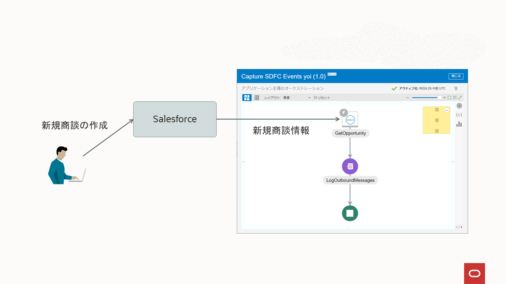
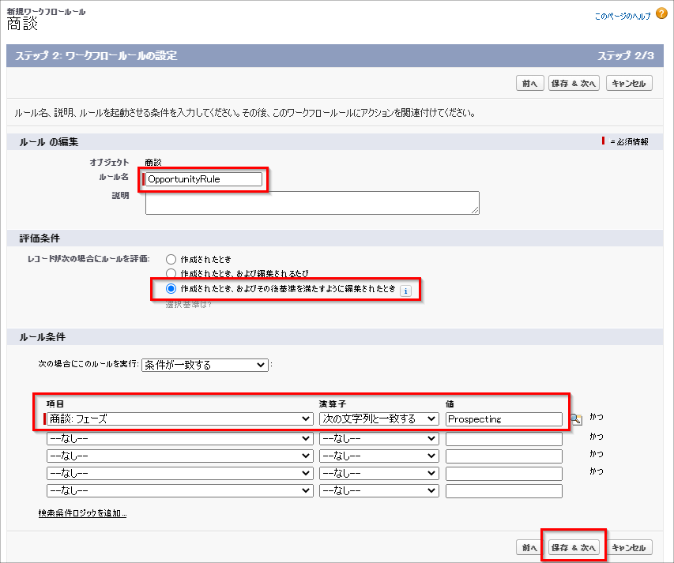
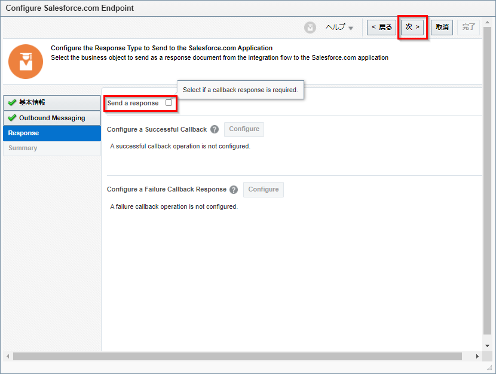
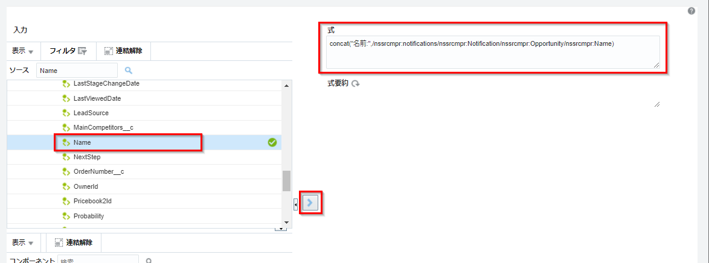
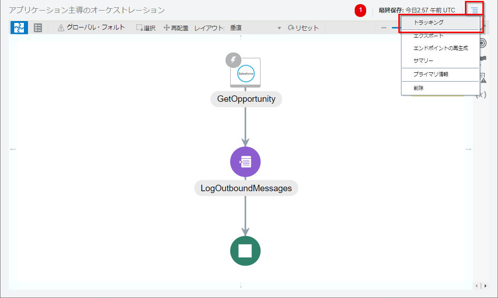
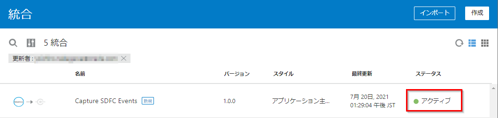

このチュートリアルは、Salesforce(SFDC)側で新規商談(Opportunity)が登録されたら、SFDCのアウトバウンドメッセージが送信され、OIC の統合が起動される一連の動作を確認します。

このハンズオンを通じて、以下のポイントを理解することができます。
- SFDC アダプターの実装方法
- SFDC アダプター経由で SFDC アウトバンドメッセージを受信する方法
- アプリケーション主導のオーケストレーションの実装
- ロガーによるログ出力方法
前提条件
バージョン
このハンズオンの内容は、Oracle Integration 21.2.3.0.0 (210505.1400.40951) 時点の内容で作成されています。最新の UI とは異なっている場合があります。最新情報については、製品マニュアルをご参照ください。
- Oracle Integration
https://docs.oracle.com/en/cloud/paas/integration-cloud/books.html
https://docs.oracle.com/cd/E83857_01/paas/integration-cloud/books.html (日本語翻訳版)
インスタンスの作成
Oracle Integration インスタンスの作成済であること。OIC インスタンスの作成方法は、以下の製品マニュアルや日本語チュートリアルをご確認ください。
- OIC インスタンスを作成する(Oracle Integration チュートリアル)
- Provisioning and Administering Oracle Integration and Oracle Integration for SaaS, Generation 2
https://docs.oracle.com/en/cloud/paas/integration-cloud/oracle-integration-oci/index.html
https://docs.oracle.com/cd/E83857_01/paas/integration-cloud/oracle-integration-oci/index.html (日本語翻訳版)
事前準備
SFDCアカウントを取得する
SFDC アカウントを取得します。無償の開発環境も提供されていますので、必要であれば取得します。
Developer Edition サインアップ手順
https://developer.salesforce.com/jpblogs/2016/04/developer-edition-signup/ https://login.salesforce.com にアクセスし、サイン・インできることを確認します。
APIバージョンを確認する
以下のナレッジを参考に、SFDC の API バージョンを確認します。
- Salesforce の Edition および API バージョンを確認する方法 https://help.salesforce.com/articleView?id=000334996&type=1&mode=1
セキュリティトークンの取得
セキュリティ・トークンを取得します。セキュリティ・トークンは、OICのSalesforceアダプタ構成時に利用します。すでに取得済であれば、この作業はスキップすることができます。
- Salesforce の 「設定」 画面を開きます。
- 右上のユーザーアイコン→ 「設定」 をクリックします。
- 左ナビゲーションの 「私の個人情報」→「私のセキュリティトークンのリセット」 をクリックします。
- 「セキュリティトークンのリセット」 をクリックします。

- 新しいセキュリティトークンが電子メールで送付されるので、メモします。
ワークフロールールの作成
ここでは、SFDCにて新規商談（Opportunity）が フェーズ=Prospecting で作成時に起動されるワークフロールールを作成します。
- Salesforce の「ホーム」画面を開きます。
- 「プロセスの自動化」→「ワークフロールール」 をクリックします。
- 「新規ルール」 をクリックします。

- オブジェクトで 「商談」 を選択し、「次へ」 をクリックします。

- ワークフロールールを以下の通りの設定し、「保存&次へ」 をクリックします。
- ルールの編集
| 入力項目 | 入力する値 |
|---|---|
| ルール名 | OpportunityRule |
| 説明 | （任意） |
- 評価条件
| 入力項目 | 入力する値 |
|---|---|
| レコードが次の場合にルールを評価 | 作成されたとき、およびその後基準を満たすように編集されたとき |
- ルールの条件
| 入力項目 | 入力する値 |
|---|---|
| 次の場合にこのルールを実行 | 一致 |
| 項目 | 商談: フェーズ |
| 演算子 | 次の文字列と一致する |
| 値 | Prospecting |

アウトバウンドメッセージの作成
続けて、ワークフローアクションを指定します。
「ワークフローアクションの追加」 で 「新規アウトバウンドメッセージ」 を選択します。

新規アウトバウンドメッセージの作成画面が開きます。以下を入力し、「保存」 をクリックします。
| 入力項目 | 入力する値 |
|---|---|
| 名前 | MyOpportunityOutbound |
| 一意の名前 | (入力不要) |
| 説明 | (任意) |
| エンドポイントURL | www.oracle.com ※ここで設定したエンドポイントURLは、ダミーのURLです。 後の手順で、OIC で作成した統合のエンドポイントURLに書き換えます。 |
| 送信ユーザー | (入力不要) |
| 保護コンポーネント | 選択しない |
| 送信セッションID | 選択しない |
| 送信する商談項目 | すべての項目を「選択済の項目」に移動 |

「完了」 をクリックします。

「有効化」 をクリックし、ワークフロールールを有効化します。

ワークフローアクションのアウトバウンドメッセージ( MyOpportunityOutbound )をクリックします。

アウトバウンドメッセージの「エンドポイント WSDL」の 「WSDL はこちら」 クリックし、WSDL ファイル( wfoutbound.wsdl )をダウンロードします。

SFDC接続の作成
OICに事前定義されたSFDCアダプタを利用して、SFDC接続を作成します。
OICインスタンスにサインインします。
「統合」→「接続」 をクリックします。
「作成」 をクリックします。

「Salesforce」 を選択し、「選択」 をクリックします。
TIPS
検索ボックスに salesforce と入力すると、Salesforce アダプタを素早く探すことができます。

接続の作成画面で以下を入力し、「作成」 をクリックします。
| 入力項目 | 入力する値 |
|---|---|
| 名前 | SFDC Adapter Connection |
| 識別子 | (入力不要) |
| キーワード | (任意) |
| ロール | トリガーと呼出し |
| 説明 | (任意) |

続けて、「接続プロパティ」 と 「セキュリティ」 を以下の通りに入力し、「テスト」 をクリックします。
- 接続プロパティ
| 入力項目 | 入力する値 |
|---|---|
| Select Salesforce.com Instance Type | Production |
| API Version | 「APIバージョンの確認」で確認したバージョンを入力(例:48.0) |
- セキュリティ
| 入力項目 | 入力する値 |
|---|---|
| セキュリティ・ポリシー | Salesforce Username Password Policy |
| ユーザー名 | salesforce ログイン時のユーザーID |
| パスワード | salesforce ログイン時のパスワートとセキュリティトークンをつなげた文字列 ※パスワードの入力例：SFDCへのログインパスワードが「ABCDE」、 セキュリティトークンが「123456」の場合は「ABCDE123456」をパスワードに設定します。 |

「検証とテスト」 をクリックします。

「正常にテストされました」 のメッセージが表示され、進捗が 100％ になります。

「保存」 をクリックします。

画面左の 「 < 」 をクリックします。

Memo
以前の Salesforce アダプターは、SFDC の設定画面より取得した Enterprise WSDL のアップロードが必要でしたが、最新の OIC より、その必要がなくなりました。詳細は以下 What’s New をご確認ください。
Salesforce Adapter - Elimination of WSDL upload task on the Connections page
https://docs.oracle.com/en/cloud/paas/integration-cloud/whats-new/index.html#INTWN-GUID-FCFEAE6B-6A2B-411E-896E-1840BCB0AF0C
統合の作成
前の手順で作成した SFDC Adapter Connection 接続を利用した統合を作成します。今回は アプリケーション主導のオーケストレーション を利用します。
アプリケーション主導のオーケストレーションの作成
OICのコンソール画面を開いて、「統合」をクリックします。
「作成」をクリックします。

「統合スタイルの選択」より、「アプリケーション主導のオーケストレーション」 を選択し、「選択」 をクリックします。

名前に 「Capture SDFC Events」 を入力します。その他の項目は未入力のままで、「作成」 をクリックします。

統合の作成キャンバスが表示されます。
SFDC 接続の構成
SFDC からのアウトバウンドメッセージを受信するように、SFDC接続を構成します。
開始の 「＋」 をクリックし、前の手順で作成した 「SFDC Adapter Connection」 を選択します。

エンドポイントの名前に GetOpportunity と入力し、「次 >」 をクリックします。

「Select Outbound Messaging WSDL」で、事前準備でSDFCよりダウンロードした アウトバウンドメッセージの WSDL ファイル（wfoutbound.wsdl） を選択し、「次 >」 をクリックします。

「Send a response」 のチェックを外し、「次 >」 をクリックします。

「完了」 をクリックします。

ロガーの構成
SFDC からのアウトバウンドメッセージで受信した内容をでログ出力するように構成します。
GetOpportunity から伸びる矢印の上にマウスをあわせ、「＋」 をクリックし、追加するコンポーネントから 「ロガー」 を選択します。

名前に LogOutboundMessages と入力し、「作成」 をクリックします。

Logで 「常時」 を選択し、ロガー・メッセージの 編集アイコン をクリックします。

コンポーネントの 「関数」→「文字列」→concat を選択し、「 > 」 をクリックします。

式に concat(string1, string2) が入力されることを確認します。

TIPS
ロガーアクションの設定、concat 関数の利用方法は、下記マニュアルをご参照ください。
Log Messages with a Logger Action
https://docs.oracle.com/en/cloud/paas/integration-cloud/integrations-user/create-orchestrated-integrations.html#GUID-5E9AED28-B0C3-4A0B-9154-6D795BAB90B4
式に入力された concat(string1, string2)の string1 を削除し、 “名前:” に変更します。
concat("名前:",string2)
string2 を削除します。
concat("名前:",)
ソースの notifications → Notification → Opportunity → Name を選択し、「 > 」 をクリックします。
concat("名前:", /nssrcmpr:notifications/nssrcmpr:Notification/nssrcmpr:Opportunity/nssrcmpr:Name)
同じ手順で、concat 関数の第3引数に “金額:” を、第4引数に notifications → Notification → Opportunity → Amount を入力します。式の記述は以下の通りとなります。
concat("名前:", /nssrcmpr:notifications/nssrcmpr:Notification/nssrcmpr:Opportunity/nssrcmpr:Name,
"金額:", /nssrcmpr:notifications/nssrcmpr:Notification/nssrcmpr:Opportunity/nssrcmpr:Amount)
「検証」 をクリックします。 「式は有効で、利用する準備ができています。」 が表示されます。

「閉じる」 をクリックします。

「検証」 をクリックします。 「ロガー・アクションLogOutboundMessagesは有効で、使用する準備ができています。」 が表示されます。


「閉じる」 をクリックします。

トラッキングの構成
統合キャンバス右上にある アクションアイコン →「トラッキング」 をクリックします。

ソースの notifications → Notification → Opportunity → id を、トラッキング・フィールドにドラッグし、「保存」をクリックします。

「保存」 をクリックします。

「閉じる」 をクリックします。
統合のアクティブ化
作成した統合をアクティブ化します。
作成した Capture SFDC Events の上にマウスカーソルを合わせて、「アクティブ化」 をクリックします。

確認画面が表示されます。「アクティブ化」 をクリックします。

統合がアクティブ状態になります。

SFDC アウトバウンドメッセージのエンドポイントURLの更新
事前準備でダミーのURLを設定したSFDCのアウトバウンドメッセージのエンドポイントURLを、前の手順でアクティブ化した Capture SFDC Events のエンドポイントURLに変更します。
作成した Capture SFDC Events の上にマウスカーソルを合わせて、「実行」 をクリックします。

エンドポイントURL をコピーします。

SFDC の設定画面を開き、作成したワークフロールール（OpportunityRule）を開きます。
ワークフローアクションの MyOpportunityOutbound を開きます。

「編集」 をクリックします。

エンドポイントURL に入力した www.oracle.com を削除し、前の手順でコピーした Capture SFDC Events のエンドポイントURL を入力し、「保存」 をクリックします。

動作確認
SFDCに「ステージ=Prospecting」の新規商談を作成し、その内容がOICに連携されることを確認します。
SFDC のセールス画面で右上にある「＋」から「新規商談」を開きます。

新規商談を1件作成します。以下の通りに入力し、「保存」 をクリックします。
| 入力項目 | 入力する値 |
|---|---|
| 商談名 | Capture SFDC Event Opportunity |
| 金額 | 1,000,000 |
| 完了予定日 | (任意の日付) |
| フェーズ | Prospecting |

OICの統合画面に戻ります。
Capture SFDC Events の 「実行」→「インスタンスのトラッキング」 をクリックします。

インスタンスのトラッキング画面が開きます。1件のインスタンスが実行されていることが確認できます。

インスタンスの上ににマウスカーソルをあわせ、「詳細の表示」 をクリックします。 統合の実行状況を確認します。ロガー(LogOutboundMessages)に、以下のように出力されていることを確認します。
Log message is: 名前:Capture SFDC Event Opportunity金額:1000000.0

TIPS
インスタンスのトラッキングは、OICホーム→モニタリング→統合→トラッキングよりアクセスできます。
以上で、このハンズオンは終了です